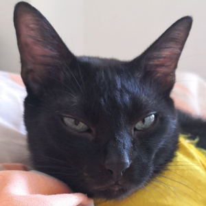
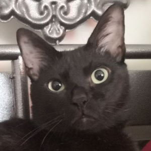
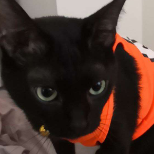
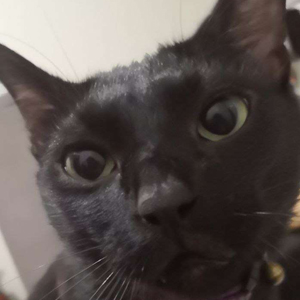

Finn's Four Moods

Unbothered
This is Finn's default mood.
Whatever you do, do not piss him off or you might face some repurcussions.
Whatever you do, do not piss him off or you might face some repurcussions.

Surprised
Finn wants to work alone.
He's always out doing his own business.
If you caught him though, this is what happens.
He's always out doing his own business.
If you caught him though, this is what happens.

Defeated
Sometimes, there are things he can't control.
Like when his owner asks him to cosplay.
The thing is, he's not a fan of anime.
Like when his owner asks him to cosplay.
The thing is, he's not a fan of anime.

Hungry
If you see those eyes grow big, be careful.
He is trying to hypnotize you to give him food.
He is trying to hypnotize you to give him food.
"Finn is cautious yet affectionate. He was the runt of the litter, and the last of his
siblings to be adopted. He used to be frightened of everything, and even now he is afraid of new places
and people. But once he trusts you, he will always want to be around you."
- Finn's Owner
Want some real time updates?
You can subscribe to our newsletter to get real time updates of Finn!